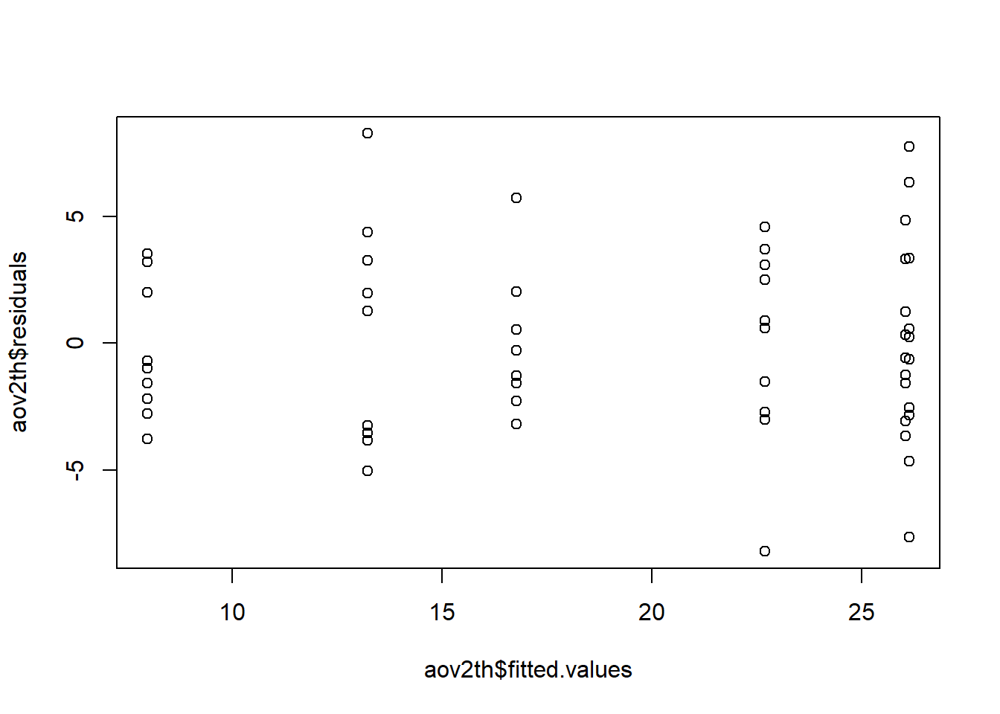
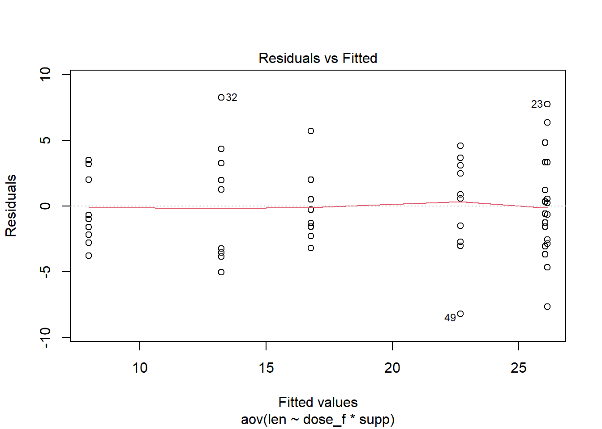
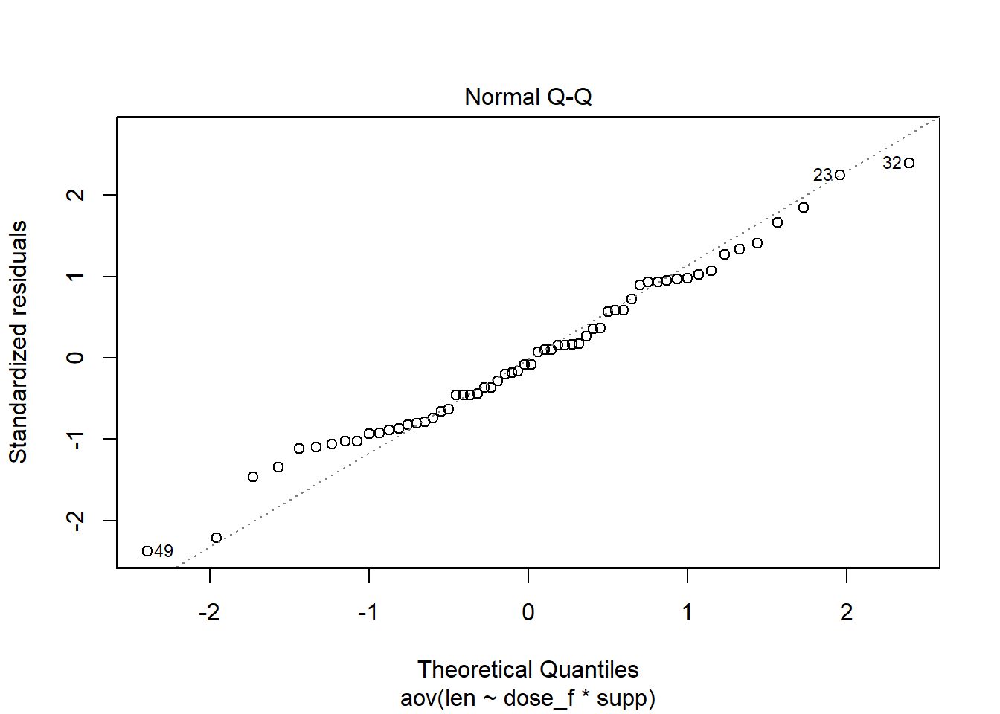
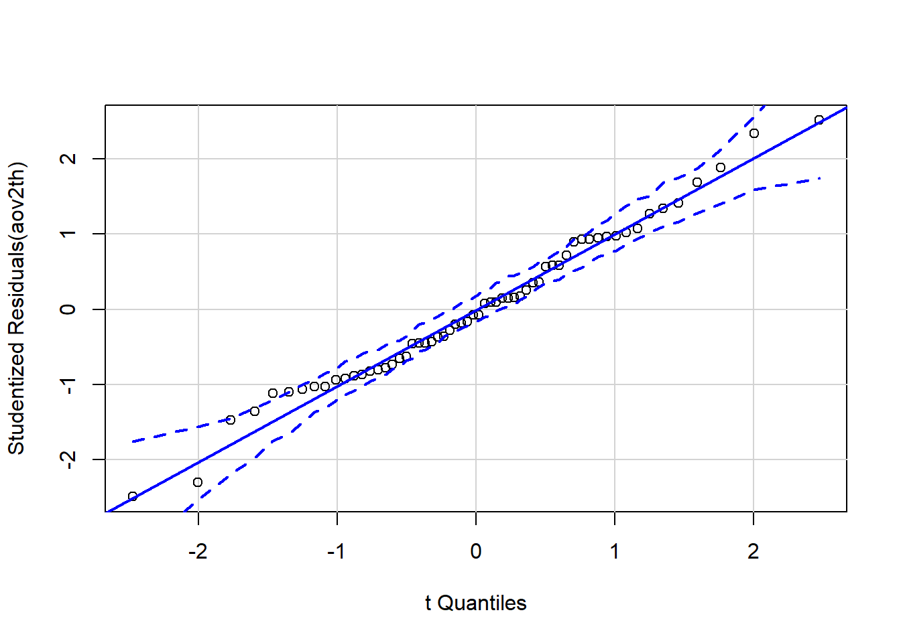
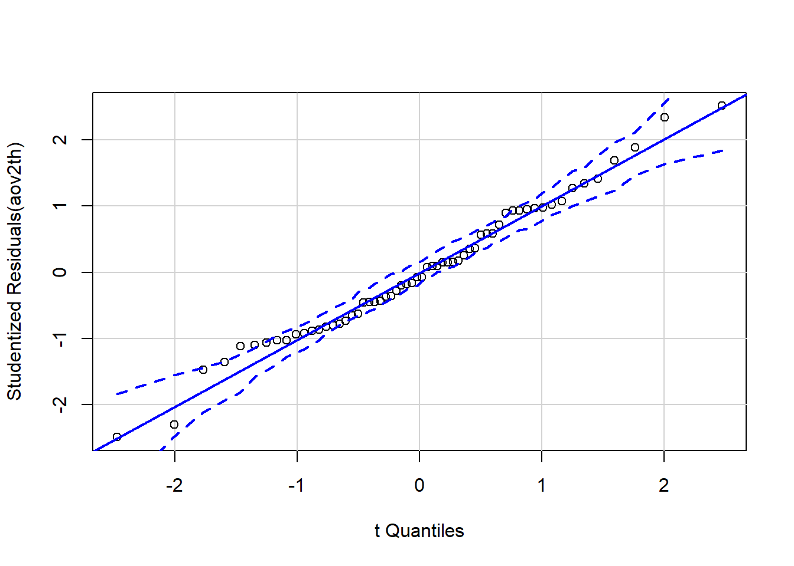

myaov <- aov(Y~X*Z, data = YourDataSet)
plot(myaov$fittedvalues, myaov$residuals)Model Diagnostics
Constant Variance Assumption
A key assumption for ANOVA tests is that the error, or residual term, has a constant variance across all factor levels. This is sometimes call homogeneity of variance, or homoscedasticity.
We explain three ways to check the assumption: rule of thumb when comparing standard deviations for each factor level, a visual assessment of the residual vs. fitted plot, and Levene’s test. These methods may not always agree. You should be aware of the underlying data. Understanding why this assumption is important and how it will affect results when violated will help you decide how to proceed after checking these diagnostics. It is also worth noting that the ANOVA F-test is robust in the face of mild to moderate violation of this assumption.
We will use the pre-loaded dataset ToothGrowth. To learn more about the dataset, run ?ToothGrowth in the console. len will be our response variable, supp is an independent factor, and dose is the other independent factor. We will analyze this as a two-way, basic factorial design. Because dose is stored as a numeric variable, we will convert it to a categorical variable and rename it dose_f before including it in the model. Don’t forget to load the tidyverse in order to use mutate().
The second line in the code below creates an ANOVA model, named aov2th.
tg The name you want for your modified dataset <- The assignment operator. The result to the right of it gets stored in an object specified on the left ToothGrowth A preloaded dataset in R |> The result on the left is piped into the first argument of the function on the right mutate( A tidyverse function to compute a new column for a dataset dose_f = The name you want to give to the new column factor( A function to convert a variable from numeric to quantitative dose A numeric variable in ToothGrowth )) Functions always end with a closing parenthesis
aov2th A name you come up with for your model <- The assignment operator. The result to the right of it gets stored in an object specified on the left aov( A function to define the model len The response, or y, variable in the model. It is numeric. ~ The ~ is like an equal sign in the model. Items on the left of ~ represent y, on the right you define independent factors (i.e. x’s). dose_f Column in the tg dataset where doese is stored as a factor * Crosses two factors. Both simple factors and the interaction factor are included in the model supp variable with 2 levels of delivery method: orange juice or asorbic acid (vc) , Seperates multiple input arguments to a function. data = tg Tell the model that the variable names come from the tg dataset ) Functions always end with a closing parenthesis
Rule of thumb
A quick rule of thumb to check this assumption is to compare standard deviations across factor levels. If the largest standard deviation is no more than double the smallest standard deviation, then the standard deviations (and the variances) are close enough to be considered equal. Check the R Instructions>Describing Data>Numerical Summaries section of the textbook on how to calculate standard deviations for each factor level.
In cases with more than 1 factor, you can compare the standard deviation of each factor level combination (i.e. the interaction factor). Sometimes though, looking at the interaction results in a very small sample size at each level or you may be concerned about a particular factor level of an experimental factor. In that case you may want to apply this rule of thumb to each factor individually. When faced with a situation where the rule of thumb is met for some factors but not for others use your best judgement. An understanding of how a violation may affect your results is critical. You can see that this approach can be tricky to implement, especially as you go beyond studies with just two factors.
Residual vs. Fitted
Another informal approach to checking the constant variance assumption is looking at a residual vs. fitted plot. Similar to the rule of thumb, in situations with more than 1 factor, you can either create a plot that shows all factor level combinations OR look at multiple plots, one for each experimental factor. In order to view this plot, you must first create the ANOVA model. Once the model is created, there are a couple of ways to get a residual vs. fitted plot.
Construct the plot manually from vectors within the aov object
The plot can be constructed using the vector of residuals and vector of fitted values contained in the aov object.
Note: If you want to know all the named items in an R object, you can run names(object). In this case we have an aov object called myaov. To see what it contains we can run names(myaov) in the console.
Example code:
plot( Base R function to create a scatterplot aov2th$ Look in the aov2th object for the item named on the right of the $ fitted.values This vector, stored in the aov object, contains the fitted, or predicted, values. , Seperates multiple input arguments to a function aov2th$ Look in the aov2th object for the item names on the right of the $ residuals Vector in the aov object that contains model residuals ) Functions always end with a closing parenthesis
Toggle output Toggle Output.
Note the resulting plot show 6 vertical groupings, one for each factor level combination. (3 dose levels x 2 levels of supp = 6 factor level combinations)

Construct the plot with a shortcut
When the function plot() is called on an aov object, 4 diagnostic plots are produced. Instead of viewing all four, chose which ones to see with the which= argument. The first of the four plots is the residual vs. fitted plot.
myaov <- aov(Y~X*Z, data = YourDataSet)
plot(myaov, which = 1)Example code:
plot( Base R function, when fed an aov object it produces 4 diagnostic plots aov2th, The aov object for our model which = Which of the four diagnostic plots do we want 1 The first of the 4 plots is the residual vs. fitted plot ) Functions always end with a closing parenthesis
Toggle output Toggle Output.
Ignore the red line on the plot. It does not measure variance and so can be distracting.

Levene’s Test
Levene’s test is a formal hypothesis test to determine if the variances are equal. In essence, this is an ANOVA F-test comparing sample variances across factor levels (as opposed to comparing sample means). A large p-value for the test indicates there is insufficient evidence to conclude one of the variances is different; and therefore the assumption of constant variance is met.
This test comes in handy when there are multiple factors in a study and it is burdensome to informally evaluate all their factor level combinations.
myaov <- aov(Y~X*Z, data = YourDataSet)
car::leveneTest(myaov)Example code:
car Levene’s test comes from the car package. :: Allows you to reference functions from the package named on the left without having to load the entire package. leveneTest( function to run Levene’s test aov2th name of the aov object to run the test on ) Functions always end with a closing parenthesis
Toggle output Toggle Output.
Levene's Test for Homogeneity of Variance (center = median)
Df F value Pr(>F)
group 5 1.7086 0.1484
54 Normal Distribution
Another key assumption for ANOVA tests is that the error, or residual, term follows a normal distribution. We use the Q-Q plot to check this assumption. There are two ways to create the Q-Q plot.
We will continue to use the aov2th model that was created at the beginning of the Constant Variance section.
Construct the Q-Q plot with a shortcut
When the function plot() is called on an aov object, 4 diagnostic plots are produced. Instead of viewing all four, chose which ones to see with the which= argument. The second of the four plots is a normal Q-Q plot.
Example code:
plot( Base R function, when fed an aov object it produces 4 diagnostic plots aov2th, The aov object for our model which = Which of the four diagnostic plots do we want 2 The second of the 4 plots is the normal Q-Q plot ) Functions always end with a closing parenthesis
Toggle output Toggle Output.

The advantage of this method is that you can easily get the residual vs. fitted plot and the normal Q-Q plot with one command by providing the which = argument a vector containing the values 1 and 2. (The : is shorthand to create a vector that starts at the value of the left of the : and increments by 1 until reaching the value on the right side of the :.)
myaov <- aov(Y~X*Z, data = YourDataSet)
plot(myaov, which = 1:2)The disadvantage of this method is that it can be difficult to determine if the points follow the line closely enough. To help with this decision, you may prefer to use the Q-Q plot from the car package.
Construct the Q-Q plot from the car package
The Q-Q plot from the car package provides boundary lines. When points are out of the boundaries that is evidence that the normal residual assumption is violated.
You can customize the way the acceptable region for points is designated. The default is shading a region. Below is code to draw dashed-line boundary.
Example code:
car qqPlot comes from the car package. :: Allows you to reference functions from the package named on the left without having to load the entire package. qqPlot( function to a Q-Q plot from the car package aov2th, name of the aov object envelope = Argument to control the formatting for the acceptable region for points list( There are potentially many arguments to affect the envelope, so they are provided as a list. style = “filled” shading, boundary “lines”, or none “lines” designate the acceptable region with lines ) Functions always end with a closing parenthesis , A comma separates the inputs to a function, in this case the qqPlot function id = FALSE This argument tells R to display the row number of the 2 most extreme vertical values or not. ) Functions always end with a closing parenthesis
Toggle output Toggle Output.

Independent Errors
An order plot can serve as a partial check of the assumption that the residuals are independent. If there are patterns/trends in the plot that may be grounds to say the assumption is violated.
The plot assumes that the dataset is sorted in the same order the data was recorded. If the data has been re-sorted or is from an observational study (i.e. the chronology of collection is unknown or irrelevant) the order plot does not make sense as a check of independence.
Example code:
plot( A function to plot the data aov2th Name you gave your model $ Access a named object within an object residuals residuals of the model ) Functions always end with a closing parenthesis
Toggle output Toggle Output.
